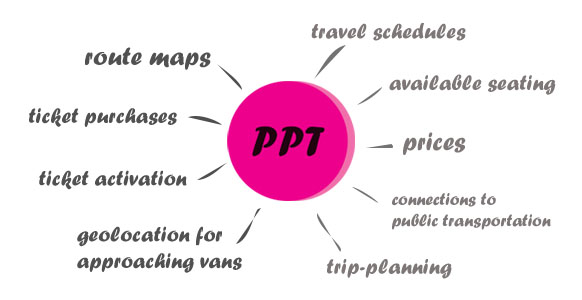
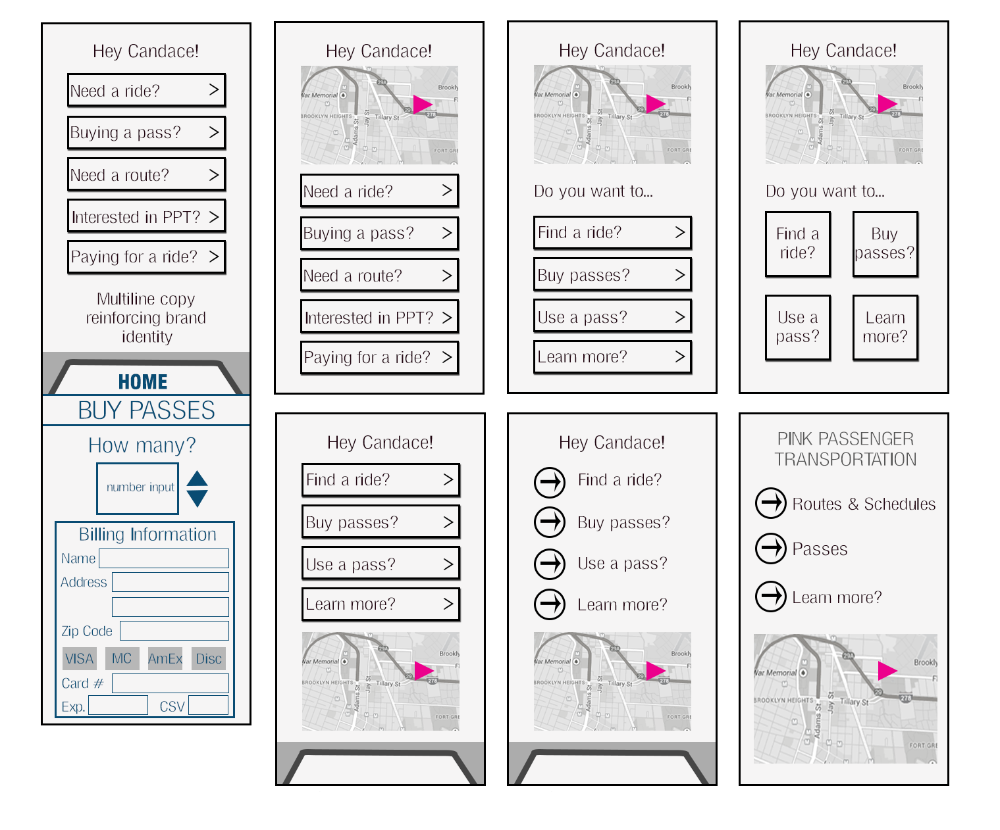
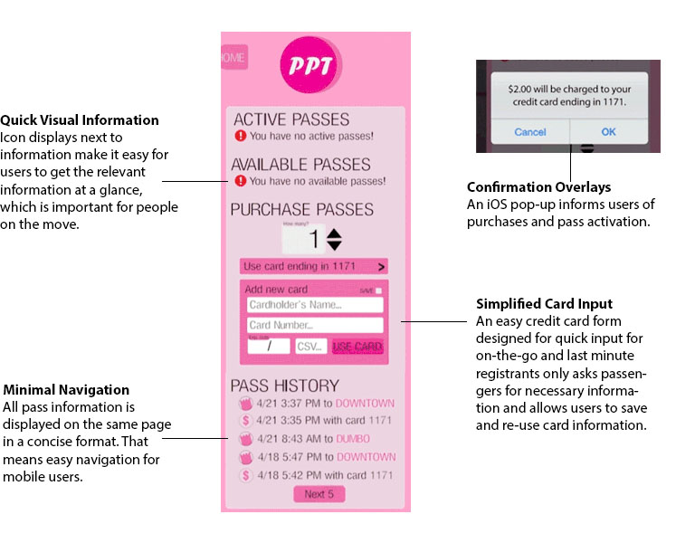

Pink Passenger Transportation
UX Research & Design
The Pink Passenger Transportation app was created as an exercise in understanding Brooklyn commuter van riders. This was originally developed as part of research into the creation of a new commuter van route for a new demographic. I spent several hours riding with and interviewing passengers to understand what technology they used and how I could improve the pick-up and payment experiences of commuters. User interviews identified these needs and desires:
With the user needs in mind, I started to wireframe designs for the app. My wireframing process starts with sketches and develops into Photoshop or Illustrator documents.
Next comes a detailed mockup. Visual identity is applied, features are finalized, and the interface is refined. By this point, design choices should be justified for both business and user needs.
The design process doesn't end with mockups. It is becoming increasingly important to be able to understand movement and navigation in a touchscreen world. I animated a user flow to demonstrate movement within the app. When communicating with developers, being able to show exactly how transitions should be implemented saves times in production and revision.